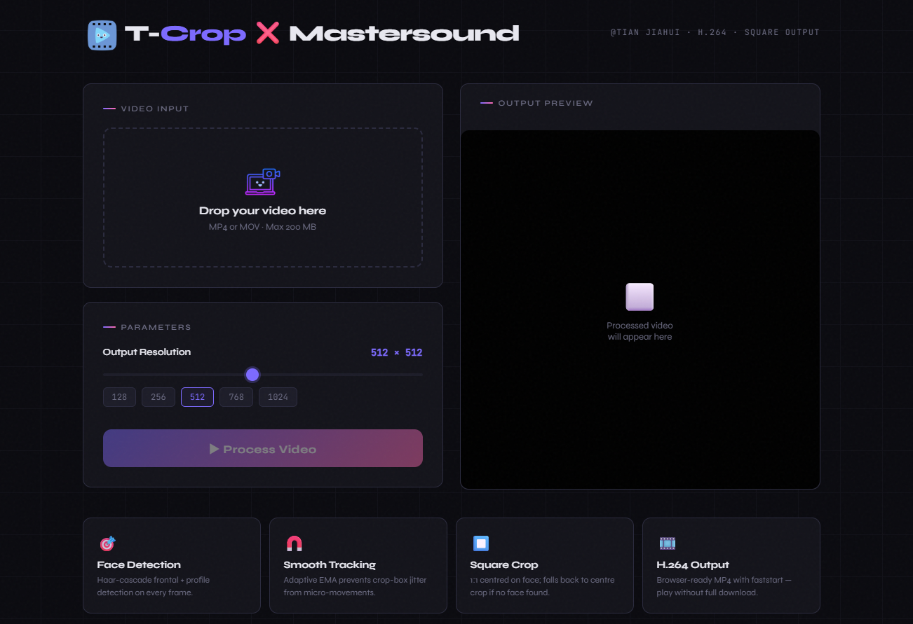
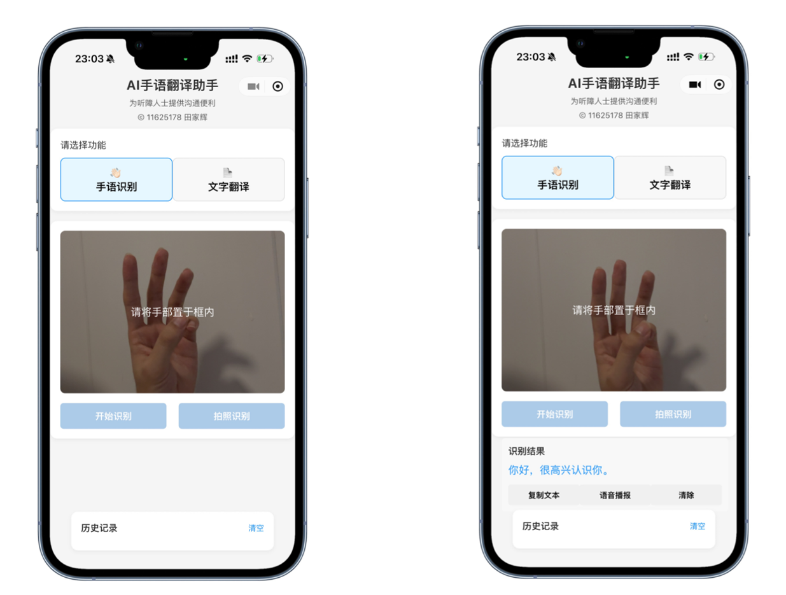
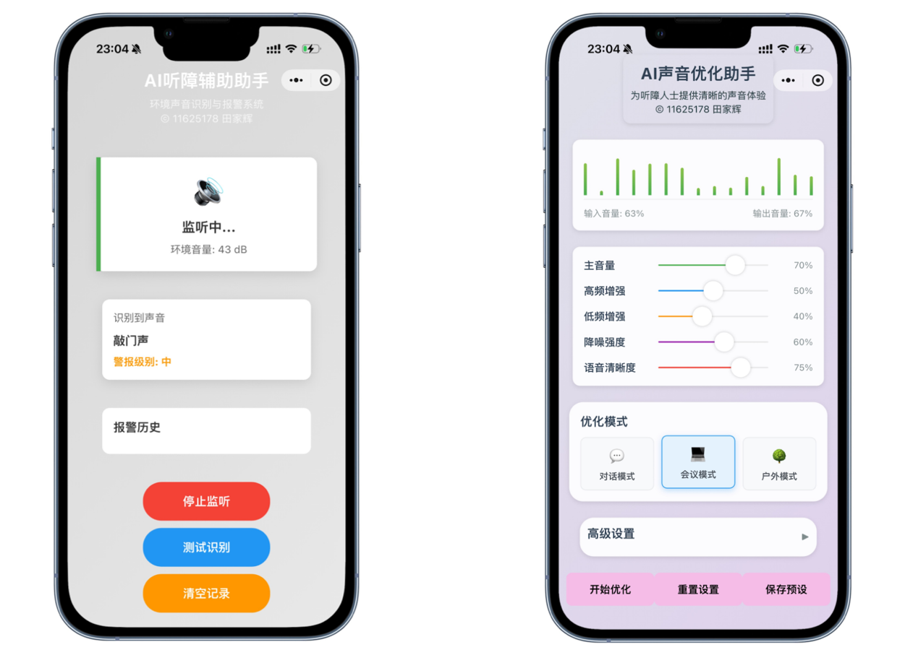
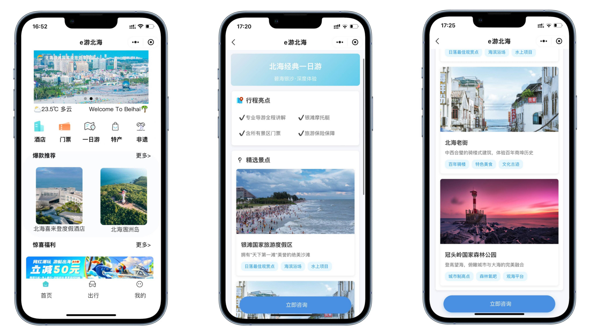
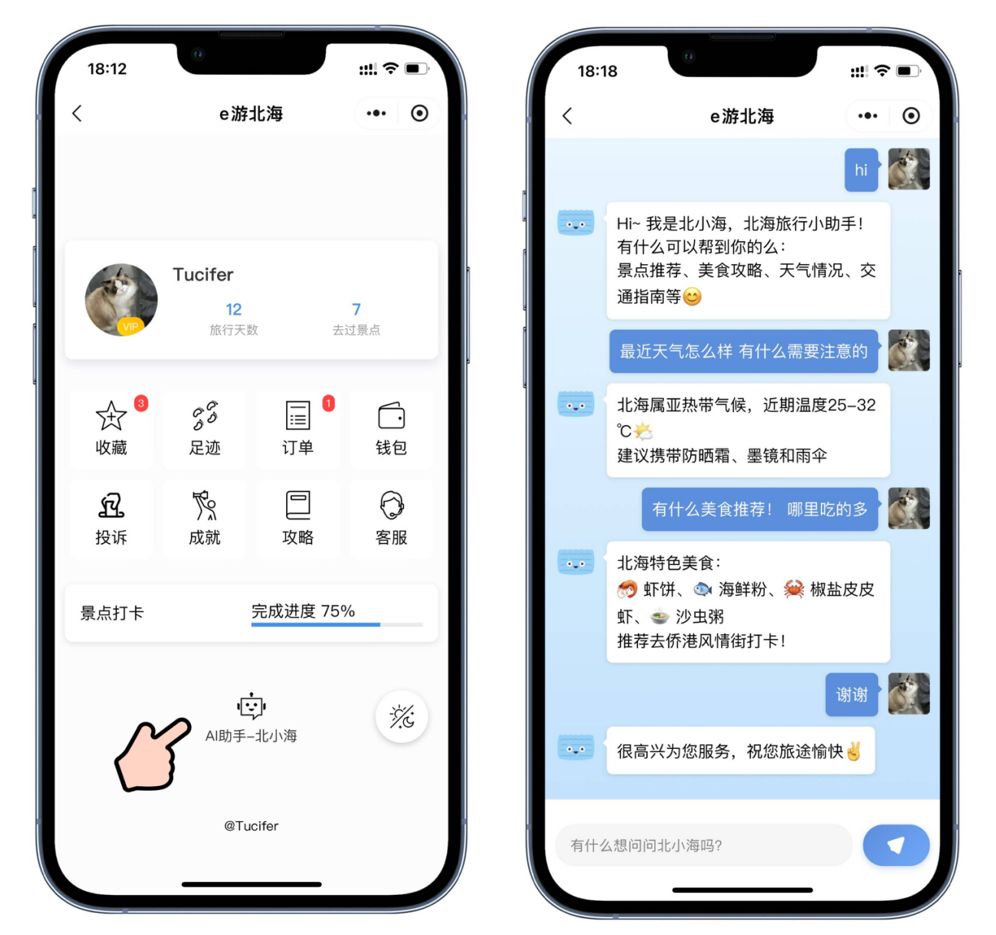
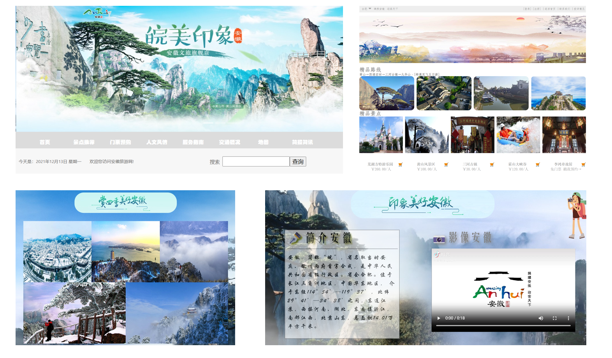
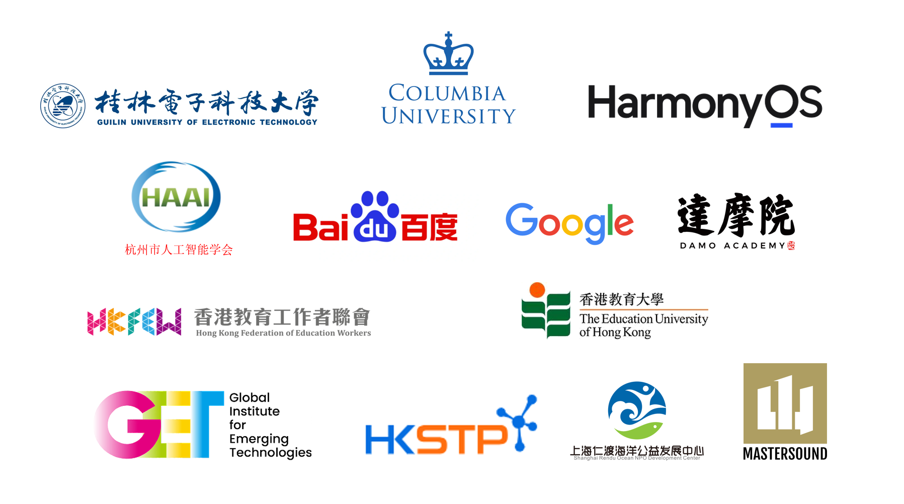
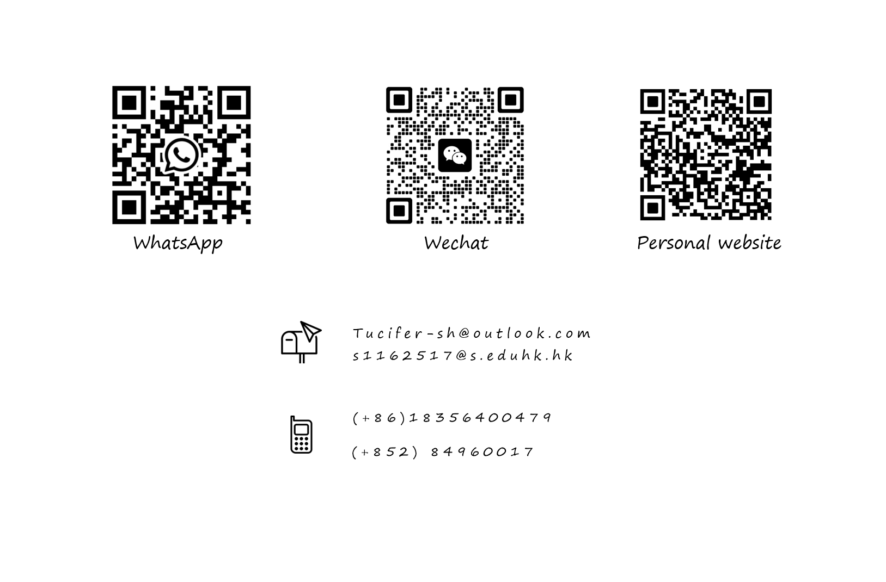

Hi, My name is Jiahui Tian, you can also call me Tucifer. This is my personal homepage. Feel free to contact me anytime.
Emerging Technology for Future Workforce · 2025 - 2026
Network Engineering · 2021 - 2025
GPA: 3.41 (Distinction) · Candidate for Academic Award
University Scholarship · Outstanding Student · Outstanding Student Lead
During my postgraduate studies, I focused on AI applications and independently authored papers on AI-empowered accessible employment, data mining in STEM education, digital well-being, AI in smart mobility, and future leadership. Undergraduate research centered on UI design, web/mini-program interfaces, and digital cultural tourism. Published paper: 'Design and Implementation of a Smart Tourism Interactive System for Beihai Scenic Spots Based on WeChat Mini-Program.'
Develop a facial detection and video cropping tool for standardizing training data; voice storage, duplication, simulation, and reconstruction; lip-syncing and voice cloning.
Advertising operations. Develop innovative advertising strategies to improve advertising effectiveness, generated 3000+ leads, 'Eaglet Program' management trainee, 'Outstanding Intern' award, top KPI in 0–6 month bracket.
Responsible for the operations and promotion of ByteDance’s various short-video platforms, and for developing effective operational strategies to boost user engagement.
Standardizes training data for AI lip-syncing & facial recognition.
Interactive Design for Smart Tourism at Beihai Scenic Area [Integrated AI Assistant].
Various web and UI design works.






I am a graduate student at The Education University of Hong Kong, majoring in Future Workforce Empowered by Emerging Technologies. GPA 3.41 (Distinction). My interdisciplinary background spans AI, STEM education, digital well-being, application development, and digital marketing. Please feel free to reach out with any questions.
Attachments: TIAN_田家輝_CV | TIAN_JIAHUI_CV
New paper on AI accessible employment published
Currently, I am deeply interested in UI design, the application of AI in the education sector, and the field of wellbeing. I welcome project teams to provide relevant platforms for collaboration.

